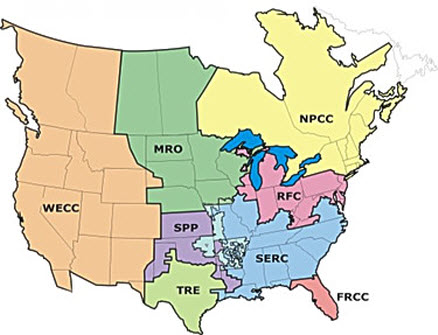
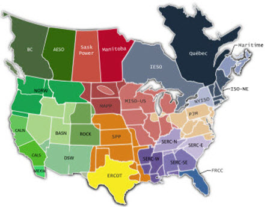
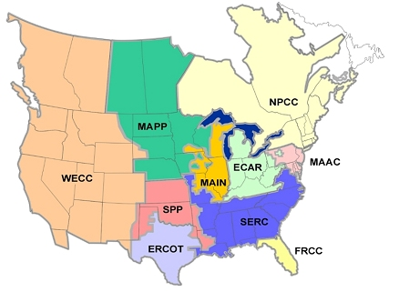

|
Form EIA-411, “Coordinated Bulk Power Supply and Demand Program Report”
Form EIA-411 collects electric reliability information from the Nation’s power system planners about the electricity supply, both capacity and energy, that is needed to serve current demand and for future growth.
The reported data can be used to examine such issues as: the reliability of the U.S. electricity system; projections which assess future demand growth and plans for constructing new generating and transmission facilities; and consequences of unavailable or constrained capacity on usage of the existing generation base.
Reliability of the electric power system covers three areas:
- the security of the electrical systems
- the usage of proper operational practices that adhere to mandatory standards
- the ability to plan for adequate supply to meet future demand.
Data collected on the Form EIA-411 focuses on planning for adequacy of supply. Separately, the Department of Energy collects information covering security and selected operational practices under the Form OE-417, "Electric Emergency Incident and Disturbance Report."
Data from the Form-411 here includes historical (with and without projections) and current data (with projections) for the reported year for:
- peak load - maximum load during a specified period of time
- monthly peak hour demand - maximum load during an integrated specified hour of time for the month of greatest electrical generation during the winter season (December-February) and summer season (June-September), respectively. Or, for each of the twelve calendar months
- net energy for load - net generation of main generating units that are system-owned or system-operated, plus energy receipts minus energy deliveries
- net internal demand - represents the system demand that is planned for by the electric power industry's reliability authority and is equal to Internal Demand less Direct Control Load Management, Interruptible Demand, and Load as a Capacity Resource.
- planned capacity resources - (or Net Capacity Resources after 2006) represents existing net generator capacity plus the addition and subtraction of capacity that either enters or leaves the region via purchases, sales, ownership, or entitlements.
Only projections, but no historical data, are reported for:
- high voltage transmission line planned additions
Regions
The data provided here are aggregated by the North American Reliability Corporation (NERC) using data provided to them by the regional entities within NERC that oversee the development and implementation of the mandatory national and regional reliability standards.
There are currently eight regions covering all of Canada and the contiguous United States plus a small part of Mexico (Baja California Norte) in North America. (Data presented here is for the United States.) For data years prior to 2005, 10 NERC regions are indicated, however, from 2005 on, there are 8 regions. (See maps below). Users should expect some differences in geographic reporting coverage from these regional realignments.

Regional Entities and Regional Councils
NERC Long-Term Reliability Assessment Areas (2010 forward)

Source: Source is the North American Electric Reliability Corporation
These are the new NERC reliability assessment areas, which were adapted in 2011. In prior years NERC reliability assessments were performed by regional entities, which are mapped in Figure 2.
The new NERC reliability assessment areas are a mixture of NERC reliability entities, entity sub-regions, regional transmission organizations and system operators. Starting in 2011, the data for the Coordinated Bulk Power Supply and Demand Program Report (EIA-411) are displayed for the following reliability assessment areas: FRCC, NPCC, MAPP, MISO-US, PJM, SERC aggregate, SPP, ERCOT Interconnection, and Western Interconnection aggregate (WECC). Historical EIA-411 data are presented by NERC reliability entities.
NERC Reliability Assessment Areas names
BASN – Basin (WECC)
CALN– California – North (WECC)
CALS – California – South (WECC)
DSW– Desert Southwest (WECC)
ERCOT – Electric Reliability Organization of Texas (TRE)
FRCC – Florida Reliability Coordinating Council
ISO-NE – ISO New England Inc (NPCC)
MAPP – Mid-Continent Area Power Pool
MISO – Midwest Independent Transmission System Operator, Inc
NORW – Northwest (WECC)
NYISO – New York Independent System Operator (NPCC)
PJM – PJM Interconnection
ROCK – Rockies (WECC)
SERC-E – SERC – East
SERC-N – SERC – North
SERC-SE – SERC – Southeast
SERC-W – SERC – West
SPP – Southwest Power Pool Regional Entity
Notes: See Figure 2 for NERC regional entity names WECC, NPCC, SERC, TRE.
BC, AESO, Saks Power, Manitoba, IESO, Quebec, and Maritime are Canadian reliability assessment areas.
Regional Entities
Source: Source is the North American Electric Reliability Corporation.
Figures 2 and 3 shows the geographic coverage of the current and historic NERC regions. The two figures present the adjustments in territorial oversight that the electric power industry underwent when it transformed itself from a voluntary framework of industry reliability councils to come under the new authority of the electricity reliability organization (ERO). The passage of the Energy Policy Act of 2005 authorized the ERO to develop mandatory reliability standards and also granted enforcement authorities.
New NERC Regional Council Names
The current NERC Region names are as follows:
- Florida Reliability Coordinating Council (FRCC)
- Midwest Reliability Organization (MRO)
- Northeast Power Coordinating Council (NPCC)
- ReliabilityFirst Corporation (RFC)
- SERC Reliability Corporation (SERC)
- Southwest Power Pool, RE (SPP)
- Texas Regional Entity (TRE)
- Western Electricity Coordinating Council (WECC)
Regional Councils (Historic through 2004)

Source: U.S. Energy Information Administration, based on Bloomberg.
Figures 1 and 2 shows the geographic coverage of the current and historic NERC regions. The two figures present the adjustments in territorial oversight that the electric power industry underwent when it transformed itself from a voluntary framework of industry reliability councils to come under the new authority of the electricity reliability organization (ERO). The passage of the Energy Policy Act of 2005 authorized the ERO to develop mandatory reliability standards and also granted enforcement authorities.
Old NERC Regional Council Names
The historic NERC Regional Council names are as follows:
- East Central Area Reliability Coordination Agreement (ECAR)
- Electric Reliability Council of Texas (ERCOT)
- Florida Reliability Coordinating Council (FRCC)
- Mid-Atlantic Area Council (MAAC)
- Mid-America Interconnected Network (MAIN)
- Mid-Continent Area Power Pool (MAPP)
- Northeast Power Coordinating Council (NPCC)
- Southeastern Electric Reliability Council (SERC)
- Southwest Power Pool (SPP)
- Western Energy Coordinating Council (WECC)
|